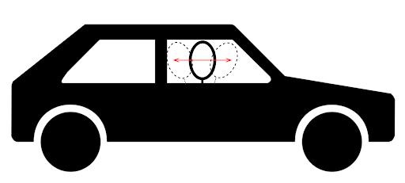
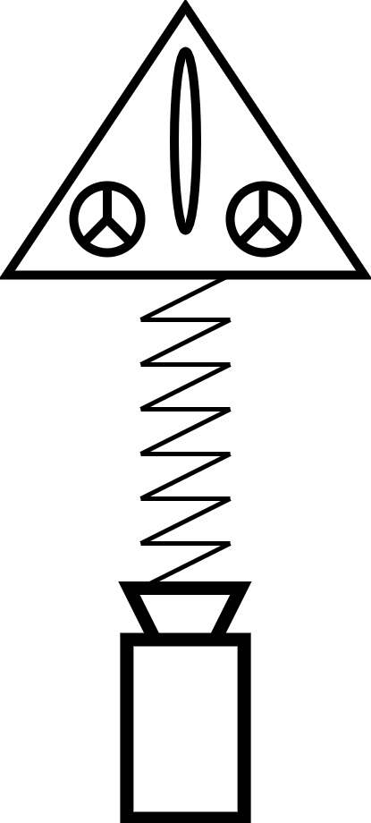

AerRacers Postmortem
Context
Today, I’m going to present the project I’ve worked on at the SAE Institute of Geneva during my third year of bachelor in Games Programming. The objectives of this project were to create a game on a custom Game engine in C++ with the other students in my class that would run on the Nintendo Switch.
Team
For the project, we are 4 main members, that worked on the project from start to end:
- Sébastien Feser: Lead Project, Lead Gameplay Programmer, Lead Designer
- Luca Floreau: Producer, Lead Programmer, Gameplay Programmer
- Simon Canas: Lead Engine Programmer, Lead Tool Programmer
- Stephen Grosjean: DevOps, Gameplay Programmer, Game Designer
The entire team counted 25 people working on the project:
- 10 Game Arts
- 2 Audios
- 13 Programmers
Constraints
For this project, we had some technical constraint that our teacher Elias Fahran gave us:
- Use the Neko engine (A custom game engine developed by our teacher and ourselves)
- Develop a game for the Nintendo Switch
We also had some gameplay constraints:
- Develop a racing game
- Develop a local multiplayer game
Project
Our project is called “AerRacers” and it’s a multiplayer pod racing game where the player can go very fast but has to be careful about the obstacles on his road. The player has to manage his speed, that’s why the ship’s movements are directly controlled by the joycons joysticks, each stick moving a rotor from the spaceship.
Organization
had 5 months to develop this project. We started it on September 17th 2020 and ended on May 07th 2021.
Every week, we were doing weekly meetings to get information about everyone’s progression on the project:
- Wednesday: Meeting with the 4 main team members
- Thursday: Meeting with our teacher Elias Fahran
Lead Project
On this project, I was the Lead Project. I had to communicate with every team member and manage the
leads. I also was responsible for the communication with external members that helped us with the
project.
At the beginning of the project, we quickly started the weekly meetings which helped a lot of the
members to know what everyone was doing and to be sure we weren’t having any delay. Unfortunately,
at first, we weren’t organized well enough, so we accumulated a lot of delays for the entire
project because every member met a lot of problems doing their tasks. To catch up, we have
reorganized our planning in December and cut some features. After that, we managed to meet the
deadlines we planned.
Lead Designer
As the Lead Designer on the project AerRacers, I had to decide about the concept of the game and think about every feature to implement in our game for it to be fun.
Gameplay References

We were inspired by Mario Kart 8 mainly for the simple UI the game had and for the level design of the races in the game.

This game is our main reference. We got inspired by the speed of the ship in the game and also about the open levels.

We got inspired by the smooth camera of this game and the reaction it has with the vehicle.
References Arts
For the game artistic direction, we found several main references:
We got inspired by the Porco Rosso ships, which is inspired by the look of the spaceships from the 30s.
This game inspired us for the low poly look of the world and the colorful environments.
Concept
After looking after the reference, we decided with the different constraints we had for this project to develop our game around these basic rules:
- Prod racing multiplayer game
- Ships move fast
- Movements with the joycon’s sticks
We also thought about a bunch of different mechanics for our game:
- Local multiplier
- Destructible ships
- Boosts
- Ship explosion
- Ship health bar
But the only mechanic we kept at the end was the local multiplier because we had a lot of delay in the development of the 3Cs
Level Design
We worked on the level design using the Unity Engine. We used two different scenes:
- Playground: Scene to test the 3C and the movements of the ships
- Level Design: Scene to create the final level design of the game.
Problems Encountered
During the development of the Game Design, we encountered a bunch of problems.
The first one was that we didn’t explain well enough what was the project and
what was the concept of the game. The members of the team had a different
vision of what the game was which caused problems, especially with our concept
artist. To solve this problem, we’ve taken our time to describe the most
detailed way the entire game features in a reference file and it helped a lot
of the members to know what the concept of the game was.
Another problem we met was the fact that we weren’t clear about who was
designing the game. At first, the constraints of the project were defined
by our teacher, but after that, a lot of different gameplay and artist
constraints were defined or proposed by our teacher and the concept artist.
At the beginning of the project, we were a bit lost about this, but in the
end, we understood that we were making the decisions for the project.
What I learned
With this project, I learned some different game design things.
I first learned that the game design and concept have to be defined the fastest
possible, especially the MVP, because a lot of members of the team depend on it,
in our case, the Concept Artist, the Producer, and the Gameplay Programmers.
I also learned that it was very important to iterate the gameplay a lot to make our
game fun. I learned that it was very important to create tests frequently.
Designing the game was a harder task than I thought at first. Because it’s not hard
to create game mechanics, but the harder part is to create a “fun” game.
Lead Gameplay Programmer
As the Lead Gameplay Programmer, I had to manage the implementation of the Camera,
Character, and Controls (3C), design the level, and manage the implementation of every
game’s features in the final game.
The gameplay development was split into 2 parts:
- 3C and Level Design using Unity
- Games feature & exportation of Unity code and scene on the Neko Engine
We decided to split the development into two parts, because the Neko Engine wasn’t ready for us to test the 3C and to design a level, and it would’ve been more complicated to do so because Unity allowed us to test the 3C faster.
3C
At the start of the project, I have created basic movements and a camera for our ship.
But after that, we realized that to make the game “fun”, we had to work harder on every
part of the three C. That’s why Stephen Grosjean joined me during the development of the 3Cs.
We decided to split the tasks like this:
- Stephen Grosjean: Character and Controls
- Sébastien Feser (me): Camera
Camera Development
To make a fun camera for our game, I had the idea to make the camera behave like the driver of the car. If the ship accelerates, the camera would be a bit behind its basic position, and if the ship collides with a wall, the camera would be pushed forward before going back to its basic position.
|
To do so, I’ve imagined a spring system for Unity, imagining a spring link between the ship
and the camera, that pulls or pushes the camera when the ship is moving.
|


|
Lessons Learned on Unity
I’ve learned a lot of lessons about the Unity development of the game.
First, that it’s really important not to stay too long working on one task.
At that moment I should have given up and tried something less hard, or asked
for more help, even if I already did it.
Second, I’ve learned that I maybe could’ve solved this problem if I was better
at debugging. I used DebugModes on Unity but I wasn’t able to guess the problem by
doing that. I still have a lack of experience in debugging and I’ll have to work
on it because it’s a very important skill for a game programmer.
Development in Neko
After the development of Unity, I had to work on the Neko Engine to implement the missing features of the game.
Stephen worked on the implementation of our Unity code in the Neko Engine and on the implementation of the Audio,
and I worked on the menu and game management and the waypoint system.
Waypoint System

To know the placement of the players in the race, I’ve developed a waypoint
system. The waypoint system I’ve imagined uses a waypoint map in which the
player’s position is calculated between the waypoints the player is in. The
waypoint manager keeps a target waypoint to calculate the player’s position
and update the target waypoint, by calculating the dot product between the
vector Player-Waypoint and the vector Waypoint-NextWaypoint.
I recommend you to read my blogpost “Waypoint System to get the placer’s
placement in a racing game” for more details.
Menu & Game Management

For the Menu and Game Management, I’ve used a lot of enum classes to know the status
of the menu and in the game.
The menu has several sections:
- The Main Menu: Where the player can look at the credits or start the game
- The Credits: Where the credits of each member from the team are displayed
- The Selection Screen: Where the players can join the game and select the skin of their spaceship
I recommend you to read my “Menu & Game management for AerRacers” blogpost for more details.
Lessons Learned on Neko
During the development of the Neko Engine, I’ve learned that it was very important to be more curious about
the code that our colleagues implemented. When you know what your colleagues do, it’s then easier for you to
use their code and understand it.
I learned that it was also very important to ask a lot of questions to the team members when you are blocked
with their code. A glitch that could give you 3 days to solve, could be solved in 10 minutes by another team member.
Conclusion
Soft Skills Learned
During this project, I’ve learned a lot about myself. I’ve learned about my strengths and my weaknesses.
I’ve learned during the project that I have strong logic skills. It’s not hard for me to create a working code when I know what
I’m doing. I can also easily find the source of a glitch if I understand the system I’m working on and the code I’m working with.
I also learned that I preferred to work on systems instead of programming the gameplay part of a game.
One of the main problems I had during the project is the regularity of my work, and the lack of motivation to work on the project.
I think that the quarantine due to the Covid-19 had a huge impact on my motivation and my working efficiency. I know now, that if I
would like to be more efficient, it’d be better for me to work directly in an office and not directly in my room.
Work Skills
A skill that I missed during this project is a lack of knowledge in maths and other knowledge that could help me to solve simple problems.
I’ve learned that I still have a lot of work to do to be a better Programmer.
It’s also very important for me to organize very well my code and to be more curious about the other’s code.